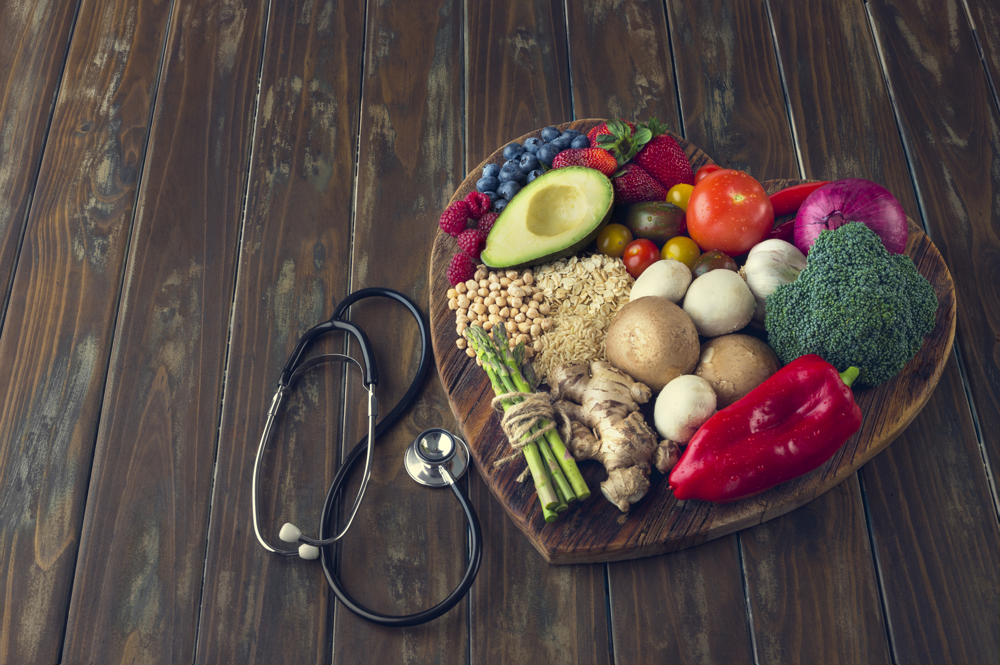

<mat-toolbar color="warn" class="mat-elevation-z6">
  <span><mat-icon>favorite</mat-icon>CHOLESTOMATE</span>
  
  <div class="container"></div>
  
  <a mat-button routerLink="about-us">About Us</a>
  <a mat-raised-button  color="accent" routerLink="login">Login</a>
  
  </mat-toolbar>
<div class = "background">
  
</div>
<router-outlet></router-outlet>